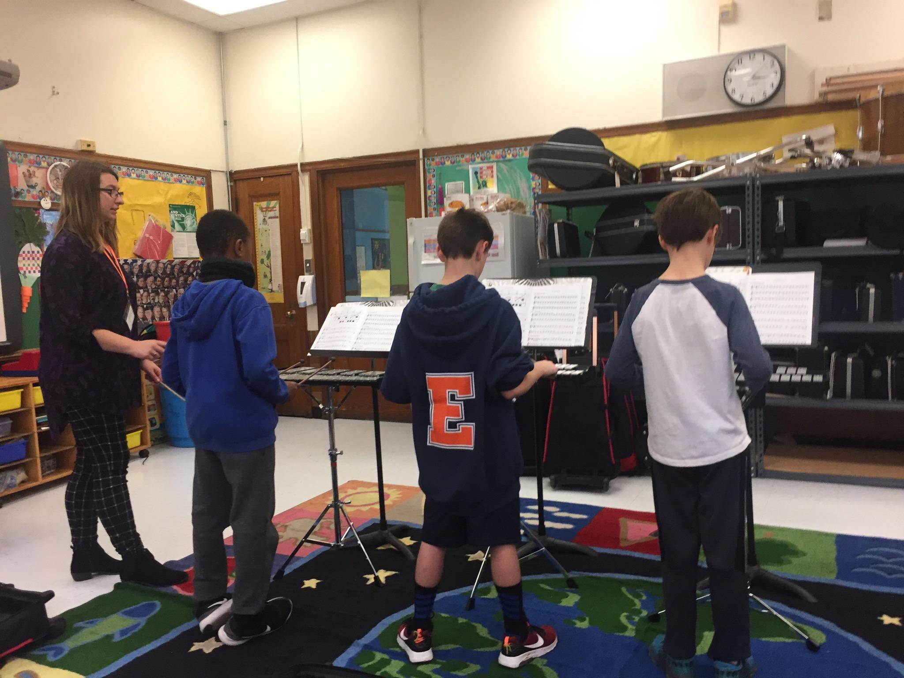

 Recruitment: During my student teaching, I got the opportunity to work with first and second year instrumentalists at two local elementary schools. At each school, some local music teachers and I held an assembly to recruit 4th and 5th graders where we demonstrated the different families of instruments and played each one for the students to hear.
Instrument Tryouts: Students that were interested in band then got to try their first and second choice instruments on a seperate day where we taught them how to make a sound on the instrument and a few basic notes. This gave the students an idea of what instruments they preferred. A parent information night was held to let parents know about rental options for instruments or the program run through the school that loaned out affordable school-owned instruments for families on free and reduced lunch. We demonstrated the instruments to the parents and talked to them about the importance of regular practice.
Baby Shark doo doo doo... Student lessons started soon after. I taught every sectional at both the first and second year level so I got experience in teaching first notes as well as beginning band repertoire. These 30 minute lessons taught not only playing, but note reading, musicality, and instrument care. We used a custom-made packet that taught note reading through the classic “Hot Cross Buns” and “Mary Had a Little Lamb” but also through songs like “Baby Shark” and other popular music the kids were hearing on the radio or on the internet.
Music Store Partnership: Another significant part of my elementary school teaching experience was cooperating with the local music store to communicate about instrument rentals, broken instruments, and refreshing supplies like reeds, cork grease, swabs, and anything else. Building a good relationship with music stores is so vital because they are supporters of your band program. They want you to succeed!